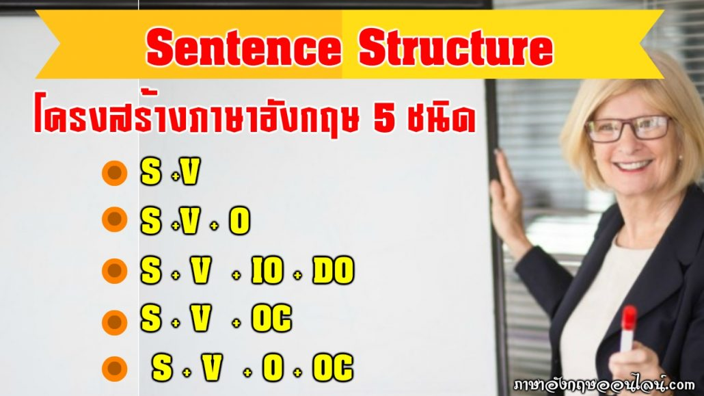

Sentence Structure
เมื่อรู้จักชนิดของคำแล้ว ขั้นต่อไปคือ การนำคำมาเรียงให้เป็นประโยค โครงสร้างพื้นฐานที่สำคัญที่สุดคือ
Subject + Verb + Object ประธาน + กริยา + กรรม
ตัวอย่าง I eat rice. I = Subject eat = Verb rice = Object แปลว่า ฉันกินข้าวโครงสร้างสำคัญที่ควรรู้
2.1 S + V ประธาน + กริยา Birds fly. นกบิน2.2 S + V + O
ประธาน + กริยา + กรรม She reads books. เธออ่านหนังสือ2.3 S + V + C
ประธาน + กริยา + ส่วนเติมเต็ม มักใช้กับ Verb to be เช่น am, is, are, was, were He is a teacher. He = Subject is = Verb a teacher = Complement2.4 S + V + O + O
ประธาน + กริยา + กรรมรอง + กรรมตรง She gave me a book. She = ประธาน gave = กริยา me = กรรมรอง a book = กรรมตรงประโยค 4 รูปแบบที่ควรรู้
ประโยคบอกเล่า I study English. ประโยคปฏิเสธ ใช้ not หรือกริยาช่วยตามโครงสร้าง I do not study English.ประโยคคำถาม Do you study English? ประโยคคำสั่ง Open the door.
